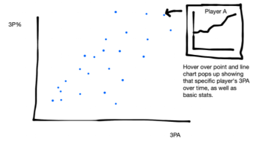

Since the introduction of the 3-point line at the end of the 1970's, the NBA has been taking more of these shots each decade. But in the past 20 years, the proportion of shots from behind the arc has grown dramatically.
[viz below to be implemented. interactivity will consist of hovering over the pie charts to view tooltip of 3pt % by decade]
Offenses are getting faster-paced, and overall shot quantity is increasing, as can be seen in the timeline below. But the 3-point revolution goes beyond that, as 3-point shots now make up XX% of overall shots, more than double the rate of just 20 years ago!
We can explore the change in different shot types here and see that it is primarily long-range 2-point shots (from outside 16 feet) that are being replaced by the more-valuable 3-pointer
For a closer look at this, you can explore every shot taken from 1997 to 2000, with breakdowns by year, team, and more! We've highlighted a few interesting trends (TODO) to get you started. [there will be buttons that show pre-filtered visualizations, as well as an explore button]
Are people just shooting more 3s, or are they also getting better at it? Here we see average 3-point attempts per game plotted against 3-point shooting percentage for players. Hover over a player to see their 3-point attempts over time [TODO]
[including image because we haven't fully debugged this draft]
It seems like players are getting better at shooting 3 point shots, but are they just getting better at shooting overall? Here we compare shooting percentages between 2s and 3s and their relative points per shot (percentage times 2 or 3 respectively).
(for now two of the same graph are shown side-by-side, but there will be a second, similar graph showing the points per shot values in the final)
We can see that the actual shots people are taking are changing dramatically, but are the types of plays also changing? Here we look at the fraction of different shot types that are assisted over time. More assists tend to mean the ball is being distributed around, and players are actively seeking those shots rather than taking them opportunistically.
The higher rate of assisted 3s over time would indicate that gameplans are actively seeking out these 3 point shots. Assists on shots overall are [XXXXXXXX], showing that [XXXXXXXX]
As the play spreads more towards the perimeter, do we see any correlation between fouls being called, awarding free throws?
Just this season, the league implemented enforcement changes to make it less likely to draw fouls on shots. It's too early to know what sort of effect this will have, but something to keep an eye on over the next few years for sure!
We've seen that 3-point shots are increasing overall, but does this remain true in the playoffs? This is when the best teams square off, and presumably the most dominant and successful strategy would be even more prominent. Like before, we've highlighted a few interesting comparisons, but you can explore the data yourself, filtering by team and season.
Below is a broad view, exploring how shot selection changes from the regular season once teams reach the playoffs. We can sort by team to see whether trends show better teams shooting differently or teams actually changing their behaviors.